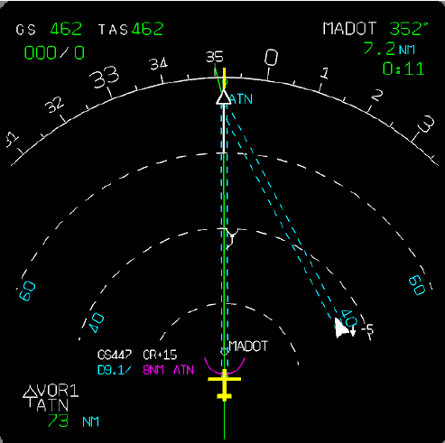

Flight Nav EKF
Guidance, Navigation & Control (GNC)
System Overview
This project implements a high-fidelity 12-State Extended Kalman Filter (EKF) running on a Teensy 4.1 microcontroller. It fuses asynchronous data streams to provide stable real-time state estimation for UAVs, solving the drift issues inherent in raw sensor data.
- Multi-Sensor Fusion: Synchronizes high-rate IMU (1kHz) data with lower-rate GPS (5Hz) and Barometer updates.
- 12-State Vector: Estimates Position (Pxyz), Velocity (Vxyz), Attitude (Quaternion qwxyz), and Gyroscope Bias (bxyz) to compensate for sensor errors.
- Embedded Optimization: Written in C++ using the Eigen library, optimized for matrix operations on embedded hardware with under 1ms cycle time.
- Noise Characterization: Utilizes covariance tuning (Q and R matrices) to trust specific sensors based on environmental dynamics (e.g., rejecting vibration noise).
State Estimation Loop
>> Sensor Inputs
[IMU] Accel/Gyro
1000 Hz
[GPS] Pos/Vel
5 Hz
[BARO] Alt
50 Hz
[MCU] Compute
Teensy 4.1
EKF Algorithm
TIME UPDATE (PREDICT)
INTEGRATE IMU KINEMATICS (xk|k-1)
INTEGRATE IMU KINEMATICS (xk|k-1)
ERROR COVARIANCE
PROPAGATE UNCERTAINTY (Pk|k-1)
PROPAGATE UNCERTAINTY (Pk|k-1)
MEASUREMENT UPDATE
KALMAN GAIN CORRECTION (GPS/BARO)
KALMAN GAIN CORRECTION (GPS/BARO)
STATE OUTPUT
QUATERNION ATTITUDE & NED POSITION
QUATERNION ATTITUDE & NED POSITION
Core Implementation (C++ / Eigen)
ekf_types.h
12-State Struct
struct EKF_State { Vector3f pos; // Position (NED) Vector3f vel; // Velocity (NED) Quaternionf q; // Attitude (Body to Earth) Vector3f gyro_bias;// Estimated Sensor Bias // 12x12 Covariance Matrix Matrix<float, 12, 12> P; };
ekf_core.cpp
Time Update (Predict)
void predict(float dt, Vector3f accel, Vector3f gyro) { // 1. Dead Reckoning: Integrate kinematics state.pos += state.vel * dt; Vector3f corrected_gyro = gyro - state.gyro_bias; state.q = integrate_quaternion(state.q, corrected_gyro, dt); // 2. Jacobian (F) for Linearized Error Dynamics Matrix12f F = compute_jacobian(state, accel, dt); // 3. Propagate Uncertainty: P = F*P*F' + Q state.P = F * state.P * F.transpose() + Q_process_noise; }
ekf_core.cpp
Measurement Update
void update_gps(Vector3f gps_pos, Vector3f gps_vel) { // Calculate Kalman Gain: K = P*H' * (H*P*H' + R)^-1 MatrixXf S = H * state.P * H.transpose() + R_gps; MatrixXf K = state.P * H.transpose() * S.inverse(); // Update State and Covariance VectorXf y = z_measured - z_predicted; // Innovation state.x += K * y; state.P = (Matrix12f::Identity() - K * H) * state.P; }
Validation & Results
OPEN INTERACTIVE REPLAY >
2D Trajectory Estimation (XY Plane)
Raw IMU Acceleration (Noisy Input)
Position Error & Uncertainty (1σ)
Performance Metrics (RMS Error)
Position X/Y
< 0.15 m
Altitude Z
< 0.08 m
Attitude (RPY)
< 1.5°
Loop Rate
100 Hz
DRIFT REDUCTION: 12°/min → <1°/min
MCU LOAD: 14% (Teensy 4.1)
Tech Stack
C++ / Python
Teensy 4.1
Eigen Library
Sensor Fusion
IMU / GPS
Engineering Impact
Replaced raw IMU integration with a sensor-fused state estimator, enabling stable autonomous flight in GPS-denied environments.
APPLICATIONS:
> UAV Path Planning
> Robotics Localization
> Wearable Motion Tracking
> UAV Path Planning
> Robotics Localization
> Wearable Motion Tracking